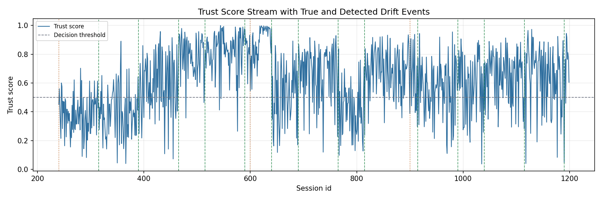

A trust model scores every session
It reads behavior such as login frequency, device posture, location shift, resource sensitivity, and network anomalies.
DriftTrust-Audit studies a simple but serious question: if a Zero Trust access model updates itself after behavior changes, can an auditor still understand why it changed, what changed, and whether the update followed security policy?
Existing drift-aware security systems usually ask, "Did the model stay accurate?" DriftTrust-Audit also asks, "Can the update be justified to a security auditor?"
It reads behavior such as login frequency, device posture, location shift, resource sensitivity, and network anomalies.
Work patterns, attacks, and access contexts change. A static model becomes less reliable, while an adaptive model changes its own logic.
Each update receives an AJR, ECI score, and ISO/IEC 27001 policy check so the system is not only adaptive, but accountable.
Click each block. This is the research workflow, not just the Python execution order.
Read session behavior from enterprise-style telemetry.
Estimate the trust score for access decisions.
Watch for prediction-error shifts and explanation shifts.
Update the model with recent evidence and replay memory.
Generate AJR, ECI, and ISO policy evidence.
The local experiment produced adaptive events, audit records, explanation-consistency scores, policy checks, and baseline comparisons.
Some simple baselines can score well on one metric in a simulated run. Our proposed layer adds what those baselines cannot provide: adaptation evidence, explanation consistency, and compliance checks for every model update.
They can be understandable, but they do not explain how the model should respond when behavior drifts over time.
It can update after drift, but a reviewer may still ask why the update happened and whether it changed reasoning safely.
AJR + ECI + ISO checks turn adaptation into an auditable governance event, which is the publication novelty.
These are copied from the local smoke-run outputs so the website can show real generated evidence: figures, metrics tables, novelty flags, and one sample AJR audit log.

Choose a lens to see and inspect after a model update.
This mini-lab is a simplified interactive version of the research idea. It shows why explainable adaptation matters.
The trust score is high, and the top explanation is healthy device posture.
The bibliography was updated from the supplied verified reference list, with direct links to standards, publisher pages, DOI records, arXiv pages, and source documents where available.
Zero Trust Architecture foundation. Status: verified official NIST publication.
Open DOIIEEE Access survey establishing the broader Zero Trust research landscape.
Open DOIUSENIX Security 2017 concept-drift detection in malware classification.
Open USENIXAISec 2021 concept-drift robustness in network intrusion detection.
Open DOILifelong intrusion detection and investigation for mitigating concept drift. Status: arXiv preprint.
Open arXivNeurIPS 2017 foundational explainability paper used to frame attribution-based drift reasoning.
Open paperSHAP-based drift root-cause cue in supply-chain forecasting. Status: arXiv preprint.
Open arXivUSPTO patent showing continual learning in ZTA is related prior art.
Open USPTO PDFGovernance standard used for AJR controls A.5.15, A.8.16, and A.5.36.
Open ISO page